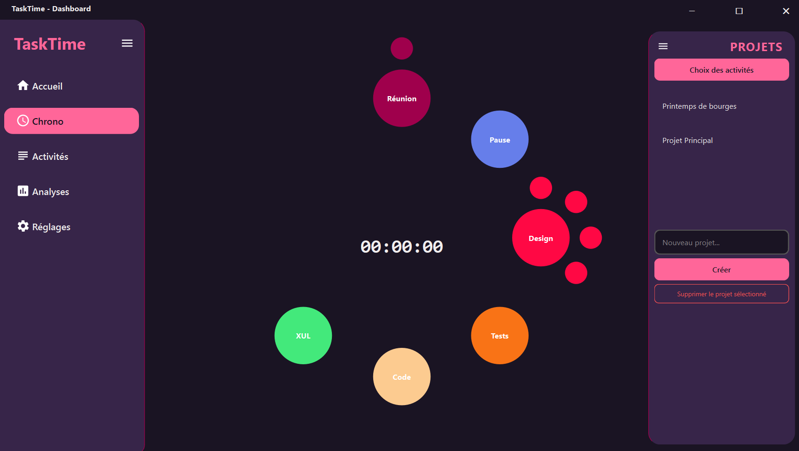
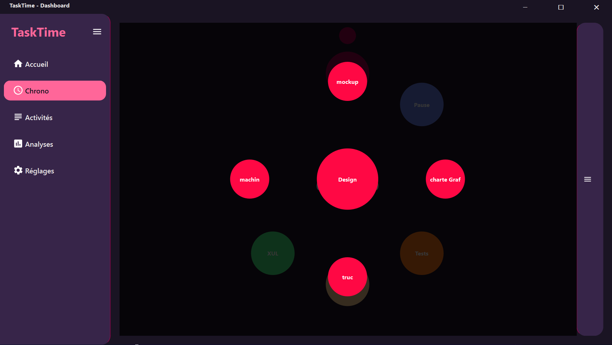
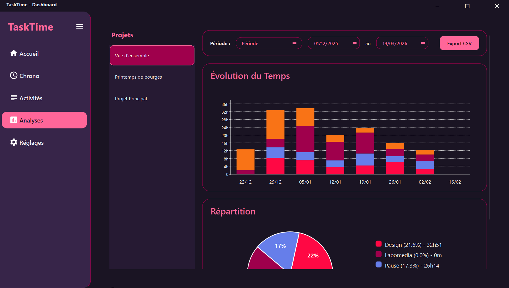

Lors de mon stage chez Labomedia, une association et pôle ressource axé sur la culture numérique, j'ai eu l'opportunité de concevoir et développer de A à Z TaskTime, une application autonome de gestion de temps et de productivité pour l'équipe interne.
Ce projet m'a permis de mettre en pratique mes compétences en algorithmique et en conception d'interface utilisateur pour répondre à un besoin concret d'optimisation de projet. Le challenge majeur était d'assurer la compatibilité multiplateforme (Windows, macOS, Linux). Pour cela, j'ai sélectionné une stack technologique robuste : Python accompagné du framework PySide6 (Qt) pour l'interface, SQLite3 pour la base de données locale, et Matplotlib pour la génération des graphiques.
Je vous invite à découvrir plus en détail les fonctionnalités natives de TaskTime (chronomètre interactif par bulles, analyses temporelles multi-échelles, gestion hiérarchique...) à travers la release.



Mes Missions
Création de TaskTime
J'ai développé TaskTime, un gestionnaire interactif avec suivi en temps réel. Le principe est particulièrement ergonomique : l'utilisateur structure ses projets et activités, puis interagit avec des "bulles" visuelles pour lancer et arrêter son chronomètre avec précision tout au long de la journée.
Visualisation et analyses dynamiques
Afin de restituer les données récoltées (sauvegardées via SQLite3), j'ai intégré la bibliothèque Matplotlib pour générer des tableaux de bord dynamiques. Grâce à des filtres temporels (Aujourd'hui, semaine, mois, année), l'équipe peut observer l'évolution et optimiser facilement l'allocation de son temps.
Développement multiplateforme via PySide6
Le vrai challenge fonctionnel et technique de cette mission était de rendre l'outil compatible avec le parc informatique hétérogène de l'équipe (Windows, macOS et Linux). C'est pourquoi j'ai opté pour Python couplé à PySide6 (Qt for Python), compilé en exécutables natifs prêts à l'emploi grâce à PyInstaller.
Environnement local et autonomie
Pour assurer une parfaite réactivité et une intégration simple, l'application fonctionne en version locale. L'utilisateur est donc totalement autonome avec son propre logiciel pour créer, paramétrer et gérer lui-même ses propres projets ainsi que ses activités sans devoir dépendre d'un serveur tiers complexe.
Exportation de données & Analyse
Pour exploiter pleinement les temps enregistrés, j'ai mis en place une fonctionnalité d'exportation. En un clic, l'équipe peut générer un fichier d'export contenant l'historique complet, ce qui facilite considérablement l'intégration des données dans des outils de tableur externes ou pour l'administration.
Interface hautement personnalisable
L'application est conçue pour être très ergonomique. L'utilisateur peut personnaliser entièrement son interface : des couleurs distinctes pour chaque "bulle" de projet pour s'y retrouver visuellement, jusqu'aux raccourcis clavier (hotkeys) modifiables pour s'adapter aux préférences de chacun et gagner du temps !